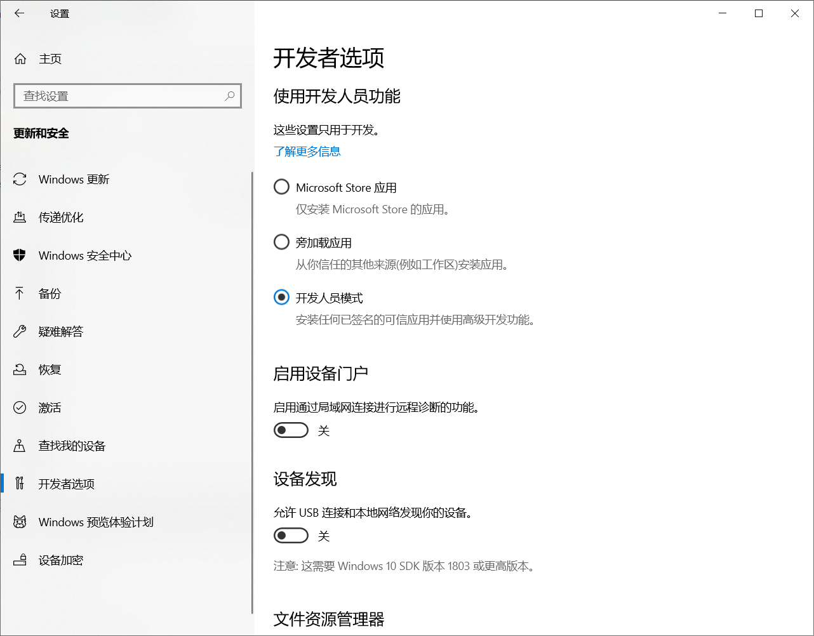
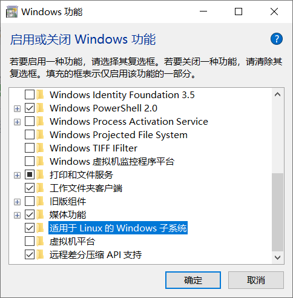
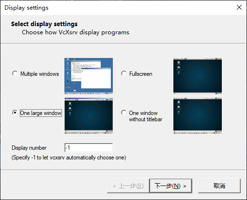
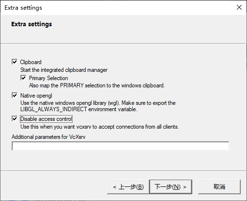
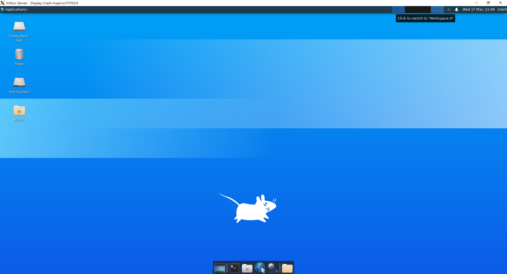

Windows Subsystem for Linux
Part A 安装WSL
选择开发人员模式

启用WSL功能
控制面板->程序->启用或关闭Windows功能

换源
中科大源：
deb https://mirrors.ustc.edu.cn/ubuntu/ xenial main restricted universe multiverse deb https://mirrors.ustc.edu.cn/ubuntu/ xenial-updates main restricted universe multiverse deb https://mirrors.ustc.edu.cn/ubuntu/ xenial-backports main restricted universe multiverse deb https://mirrors.ustc.edu.cn/ubuntu/ xenial-security main restricted universe multiverse
备份源文件：
sudo cp /etc/apt/sources.list /etc/apt/sources.list.bak
修改：
sudo nano /etc/apt/sources.list
更新：
sudo apt-get update
系统位置
C:\Users\Crash\AppData\Local\Packages\CanonicalGroupLimited.UbuntuonWindows_79rhkp1fndgsc\LocalState\rootfs
挂载U盘
新建挂载点（只需要新建一次）：
sudo mkdir /mnt/e
挂载盘符：
sudo mount -t drvfs E: /mnt/e
卸载盘符：
sudo umount /mnt/e
PART B 安装图形化界面
1、安装xfce4
sudo apt install xfce4 xfce4-terminal
2、安装VcXsrv
https://sourceforge.net/projects/vcxsrv/
3、启动VcXsrv


4、启动Ubuntu
export DISPLAY=$(cat /etc/resolv.conf | grep nameserver | awk '{print $2; exit;}'):0.0
startxfce4
5、Done
